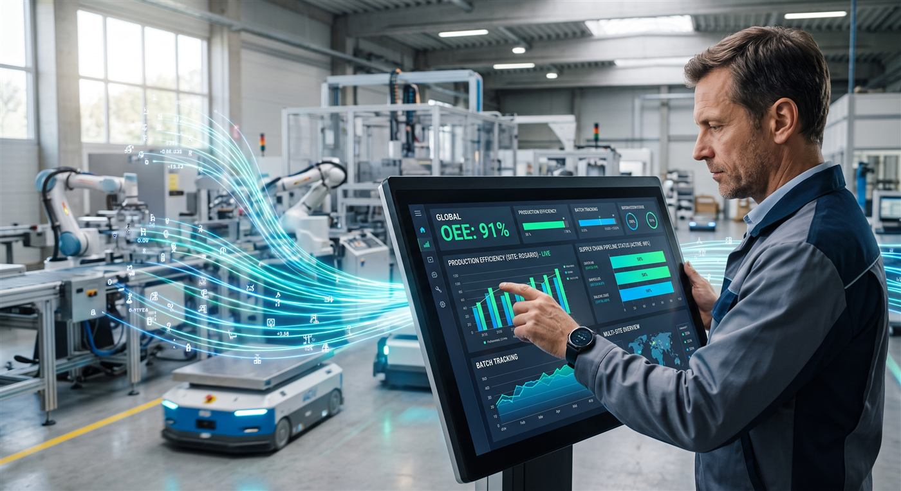

Los indicadores del mes se conocen cuando el mes ya terminó.
Para cuando el número llega, la decisión que dependía de él ya se tomó a ciegas.
Consultoría tecnológica & Industria 4.0
Tableros con KPIs estratégicos, automatizaciones de tareas repetitivas y aplicaciones a medida. Conectamos lo que ya usás y le sacamos la carga manual a tu equipo.

El punto de partida
No hace falta un sistema nuevo para todo. Casi siempre alcanza con ordenar los datos que ya existen y sacarle el trabajo repetitivo a las personas que hoy lo hacen a mano.
Para cuando el número llega, la decisión que dependía de él ya se tomó a ciegas.
Si esa persona se toma vacaciones, la empresa se queda sin números.
Funciona hasta que hay que reconstruir qué pasó entre sucursales o plantas, y no queda registro de nada.
Trabajo caro, repetitivo y propenso al error, que una automatización hace sola todas las noches.
Servicios
Conocemos cómo opera una planta y una red logística: procesos, vocabulario y dolores reales. Por eso el tablero mide lo que importa y no lo que es fácil de medir.
Relevamos la operación —remoto o en planta— y entregamos una hoja de ruta priorizada: qué resolver primero, qué impacto tiene y qué no vale la pena tocar todavía.
Ver detalleUn solo tablero que consolida sucursales, plantas o depósitos. Power BI o alternativa web.
El reporte se publica solo, todos los días, sin que nadie lo toque.
Apps chicas que se instalan en el celular del operario, sin tiendas de apps.
Portal público, área privada del cliente y sistema interno sobre una única base operativa — no tres islas que después hay que sincronizar a mano.
 Continuidad
Continuidad
Somos el área de sistemas tercerizada de tu operación, sin sumar estructura fija.
Consultar abonoVersatilidad operativa
Cada sede opera de forma independiente mientras los datos fluyen hacia una capa de control unificada. Escalar a nuevas sucursales no requiere un nuevo desarrollo: la infraestructura crece sumando accesos, sin interrumpir la operación.
Digitalizar el papel de un proceso y ver la productividad real del turno.
Trazabilidad de insumos y entregas entre sedes, con una sola fuente de verdad.
Visión y seguimiento entre sucursales en tiempo real, más control central sin llamar a nadie.
Metodología
Precio fijo por resultado, nunca por hora. Comprás una operación ordenada, no nuestro tiempo.